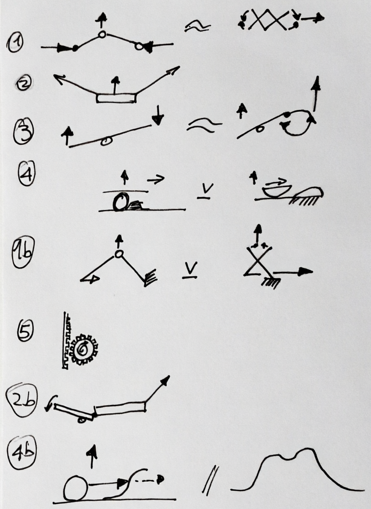
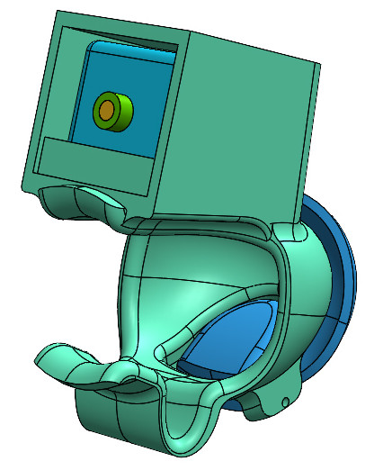
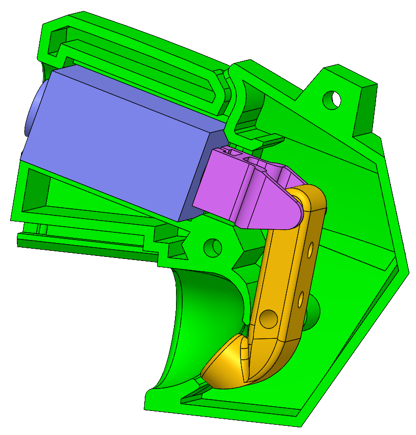

Redesigned the actuation architecture of a VR haptic glove to eliminate finger movement restriction — relocating the solenoids off the fingers and designing a transmission mechanism to propagate force feedback from a distance across the full range of motion.

Part of a broader haptic VR suit designed to enhance user immersion. The tactile subsystem used solenoids to tap the fingertips directly — but their size and placement blocked natural finger curl, breaking the experience.
Relocated the solenoids off the fingers and designed a transmission mechanism to propagate actuation impulses to the fingertips without obstructing movement. Also developed the connector system for integrating the module within the existing suit envelope.
Delivered a relocatable solenoid mechanism that restored full finger curl while preserving fingertip haptic feedback. Validated through multiple CAD and physical iterations, with final verification by the client.
The haptic glove existed but had a critical flaw — solenoids placed directly on the fingertips prevented fingers from curling. The challenge wasn't the haptics themselves, but where they sat. This phase focused entirely on relocation: move the solenoids away from the fingertips, then design a mechanism to still transmit vibration back to them.

Early ideation exploring pivot positions, lever lengths and linkage topologies — the goal was to find a geometry that could redirect solenoid force to the fingertip from a relocated position further up the finger or hand.
Early ideation mapping five linkage families to find a geometry that could redirect solenoid force from a relocated position.
Regardless of solenoid position, the fingertip still needed to be actuated. I mapped five broad linkage families to understand the mechanical trade-offs before committing to any physical build.
 ▶
▶
Prototype demo

Assembly walkthrough showing how cable routing, connector placement and linkage orientation were resolved together — each constraint influenced the others.
Integrating the mechanism required resolving three constraints simultaneously: routing DC power and data cables without restricting flex, fitting board-to-board connectors within the glove envelope, and maintaining the linkage geometry under finger load.

Near-final physical build — linkage geometry and mounting position validated against knuckle articulation and actuation range.
First physical validation of the relocated solenoid concept. This iteration tested whether the linkage geometry held under actuation and whether the mounting point interfered with knuckle articulation — two failure modes the sketches couldn't predict.
The final design consolidated the findings from physical prototyping. The solenoid was mounted further up the dorsal side of the finger, with a two-segment linkage transmitting force to a pad resting on the fingertip. The housing was designed to sit within the existing glove envelope without adding bulk at the knuckle joint.

The final redesigned tactile subsystem, showing the relocated solenoid arrangement and the propagation mechanism that delivers fingertip feedback without restricting hand movement.
Building quick, physical prototypes exposed mechanical interferences that CAD alone missed. Moving the solenoids and simplifying the linkage significantly improved wearability and freedom of movement.
Iterating with rough assemblies and glove testing helped balance actuator stroke, force transmission, and ergonomics — small geometric changes had large effects.
Prioritising fast, testable prototypes let me discard unworkable concepts early and converge on a solution that met the project's functional and comfort goals.
This project shifted how I approach integration problems — constraints from power routing, form factor and mechanical load have to be resolved together, not sequentially.
Looking to work on systems that move, sense, and respond.